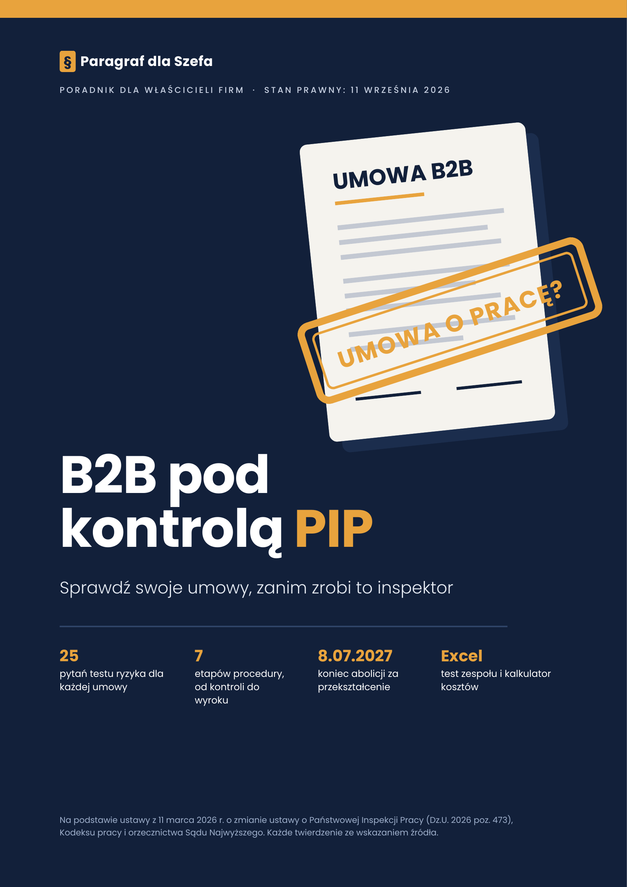
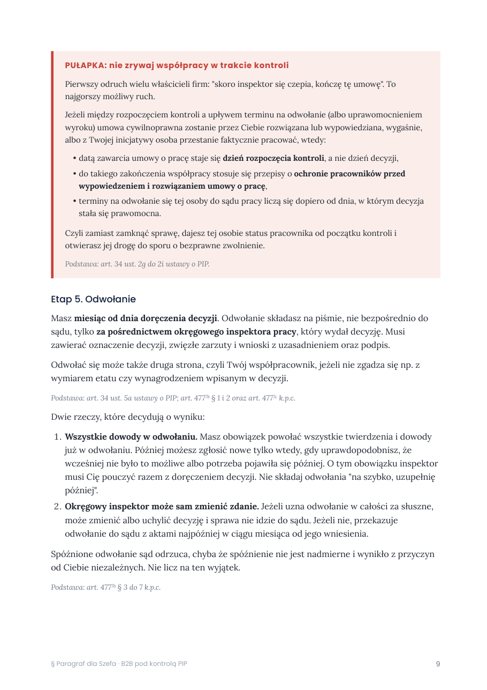
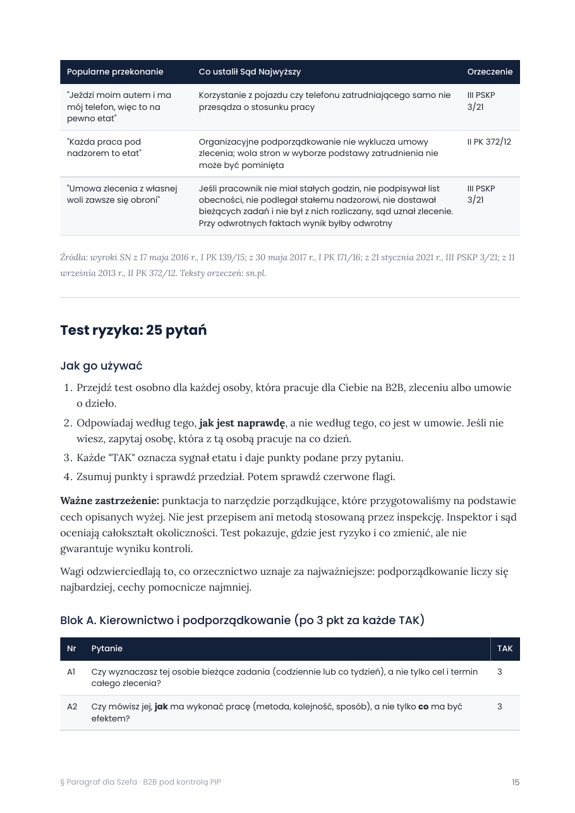
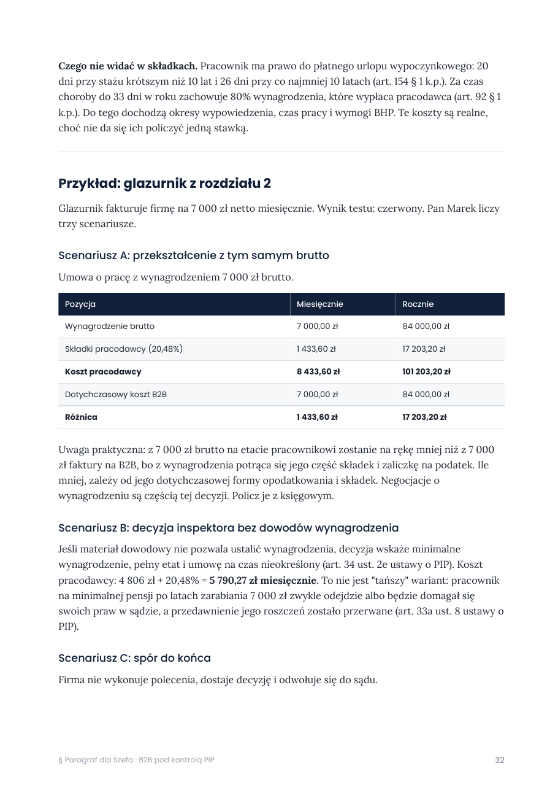

Od 8 lipca 2026 wystarczy decyzja okręgowego inspektora, bez sądu na starcie. Sprawdź w jeden wieczór, które Twoje umowy są ryzykowne, i co możesz z nimi zrobić.

Kryteria etatu zostały te same. Zmienił się sposób, w jaki inspekcja je egzekwuje.
Okręgowy inspektor pracy może wydać decyzję stwierdzającą istnienie stosunku pracy. Sąd wchodzi do gry dopiero wtedy, gdy któraś ze stron się odwoła.
art. 11 ust. 1 pkt 7a ustawy o PIPSprawdzane są także osoby, które pracowały dla firmy w ciągu roku przed rozpoczęciem kontroli. Zakończona współpraca nie znika z pola widzenia.
art. 13 pkt 1 ustawy o PIPZa zawarcie umowy cywilnoprawnej zamiast umowy o pracę grozi od 2 000 do 60 000 zł. Wcześniej było od 1 000 do 30 000 zł.
art. 281 § 1 Kodeksu pracyJeśli w trakcie kontroli wypowiesz umowę B2B, etat liczy się od dnia jej rozpoczęcia, a zakończenie współpracy ocenia się według przepisów o ochronie pracowników przed zwolnieniem. Zamiast zamknąć sprawę, otwierasz drugą.
art. 34 ust. 2g i 2h ustawy o PIPDwa pliki do pobrania od razu po zakupie.
Trzy strony z poradnika, bez retuszu.



Chroni wyłącznie przed grzywną za jedno wykroczenie i obejmuje tylko umowy zawarte przed 8 lipca 2026 r.
art. 16 ustawy z 11 marca 2026 r.Chroni przed sankcjami i wiąże inspekcję, ale każda wydana interpretacja trafia do ZUS i Krajowej Administracji Skarbowej.
art. 14b ustawy o PIPGdy dowody nie pozwalają ustalić warunków, decyzja wskaże umowę na czas nieokreślony, pełny etat i minimalne wynagrodzenie.
art. 34 ust. 2e ustawy o PIPPoradnik PDF na 48 stron i arkusz Excel. Diagnoza zajmuje jeden wieczór.
Kup za 129 złPłatność i pobieranie przez Gumroad. Pliki dostajesz od razu po zakupie.
Nie. Test i procedura obejmują wszystkie umowy cywilnoprawne: B2B, zlecenie i umowę o dzieło.
Wniosek do Trybunału nie wstrzymuje stosowania ustawy. Inspekcja stosuje nowe przepisy od 8 lipca 2026 r. Poradnik opisuje osobno, co oznacza każdy możliwy wynik wyroku.
Diagnoza to jeden wieczór, około 5 minut na osobę w teście. Zmiany w sposobie współpracy zajmują kilka tygodni.
Nie. To materiał informacyjny i edukacyjny. Przygotuje Cię do kontroli i do rozmowy z prawnikiem lub księgowym, ale ich nie zastąpi.
Z tekstu ustawy z Dziennika Ustaw (Dz.U. 2026 poz. 473), Kodeksu pracy, orzeczeń Sądu Najwyższego i materiałów Państwowej Inspekcji Pracy. Przy każdym twierdzeniu jest numer przepisu albo sygnatura, a każdy rozdział kończy się listą źródeł.